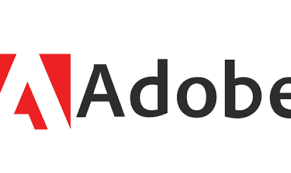
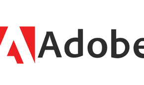
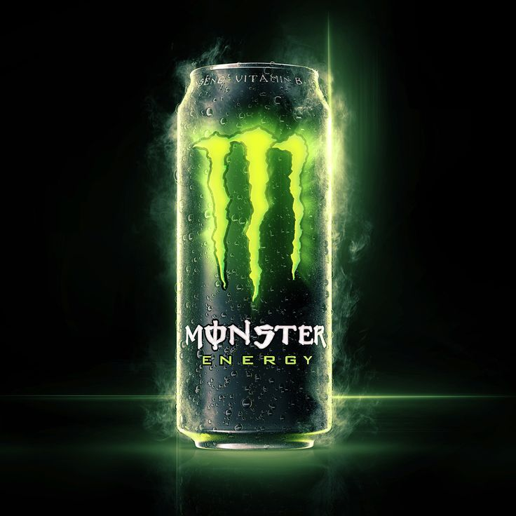
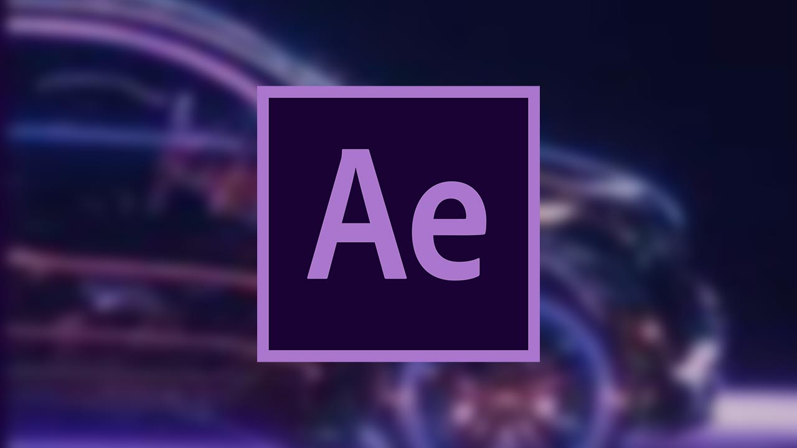
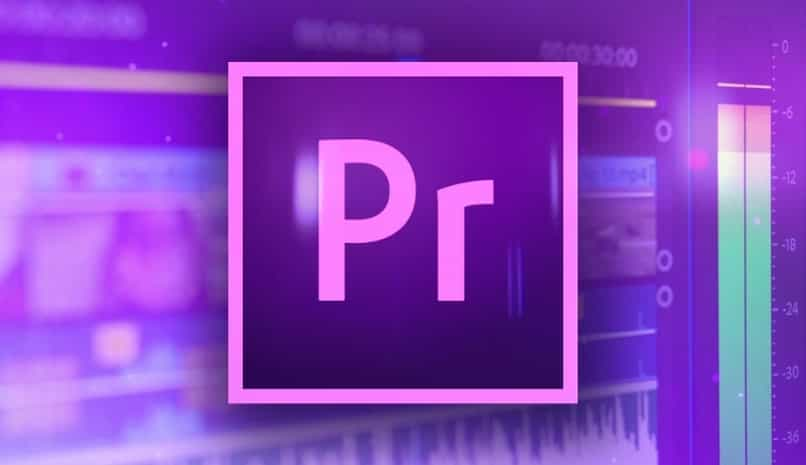
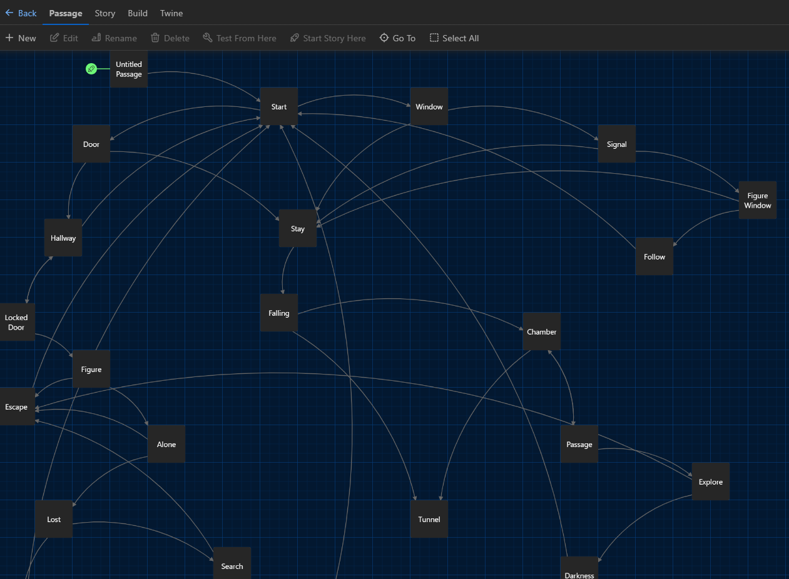
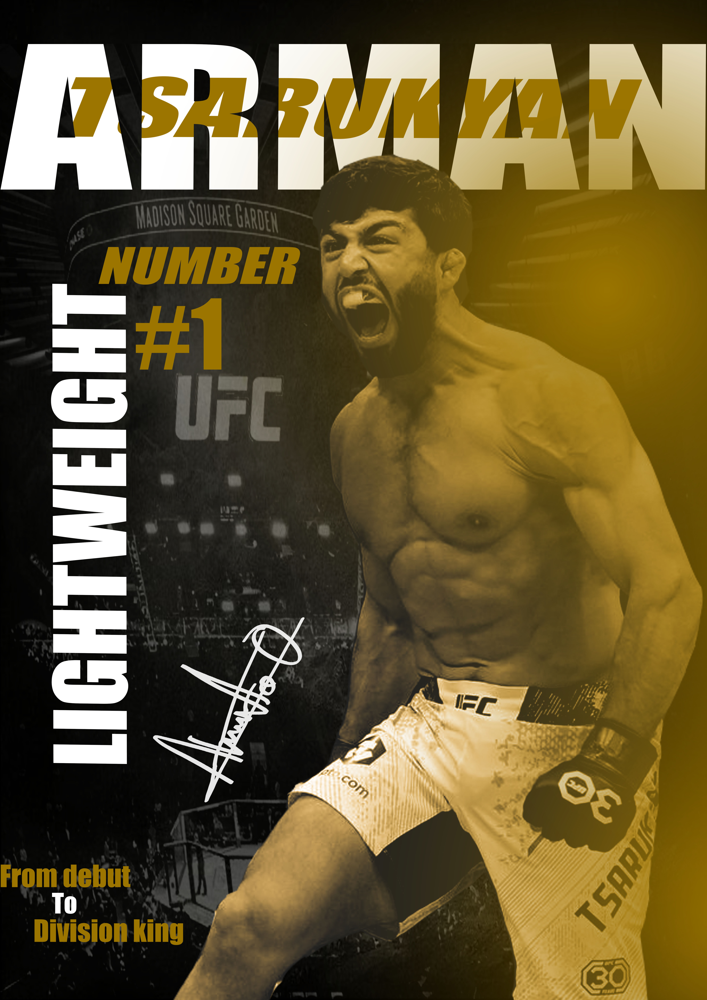

Adobe Express
Adobe Express er et verktøy for å lage enkle grafiske design som plakater, bannere og sosiale medier-innlegg. Det er brukervennlig og perfekt for raske prosjekter.
Hei! Jeg heter Ashot Apyan, og dette er min nettside hvor jeg deler hva jeg har lært i faget "Produksjon og Historiefortelling". Jeg har lært å bruke Adobe-verktøy, lage interaktive spill med Twine, og designe plakater. Utforsk sidene for å se mine prosjekter og ferdigheter!
Adobe Express er et verktøy for å lage enkle grafiske design som plakater, bannere og sosiale medier-innlegg. Det er brukervennlig og perfekt for raske prosjekter.
Photoshop er et avansert bilderedigeringsprogram. Det kan brukes til å retusjere bilder, lage montasjer, og mye mer. Her er noen eksempler på hva jeg har laget i Photoshop.
After Effects brukes til å lage animasjoner og spesialeffekter for video. Jeg har lært å lage dynamiske visuelle effekter og animasjoner.
Premiere Pro er et videoredigeringsprogram. Det brukes til å klippe, redigere og finjustere videoer. Her er noen av mine redigeringsprosjekter.
Twine er et verktøy for å lage interaktive historier og spill. Det er enkelt å bruke og gir mulighet til å lage komplekse fortellingsstrukturer.
Jeg har laget en plakat for UFC-fighteren Arman Tsarukian. Denne plakaten viser mine ferdigheter i grafisk design og bruk av Adobe-verktøy.
